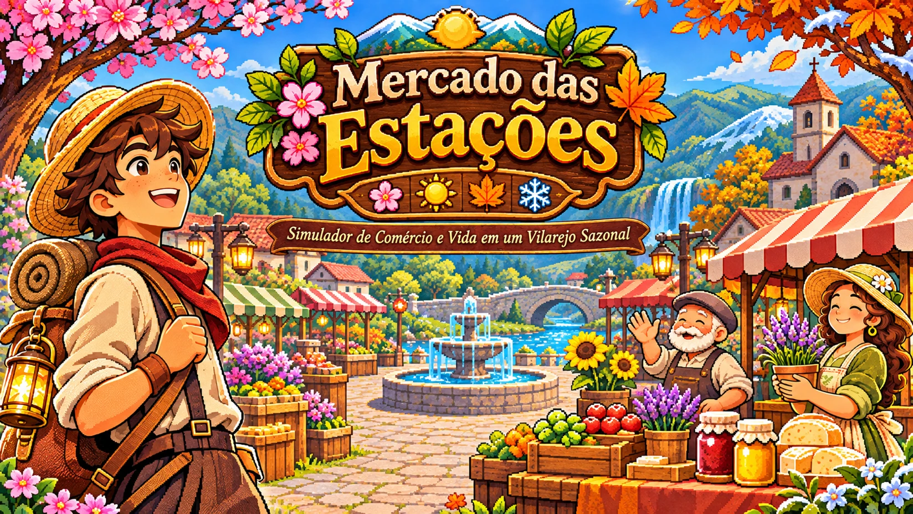
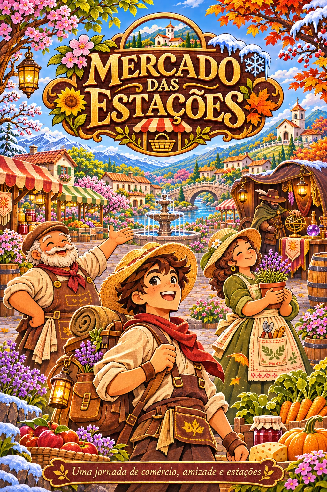
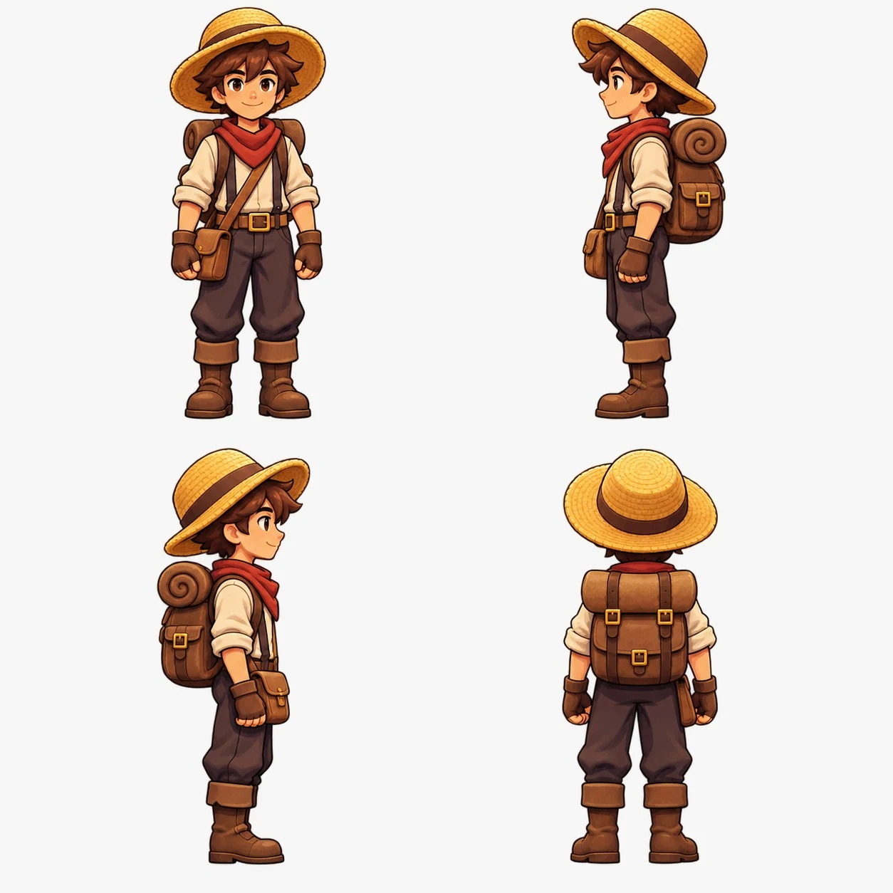
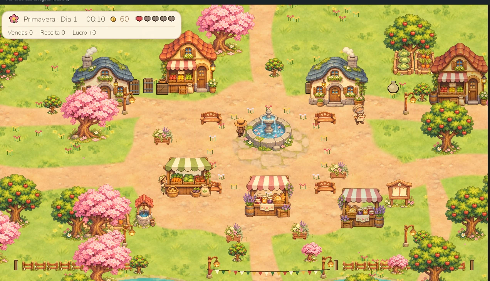
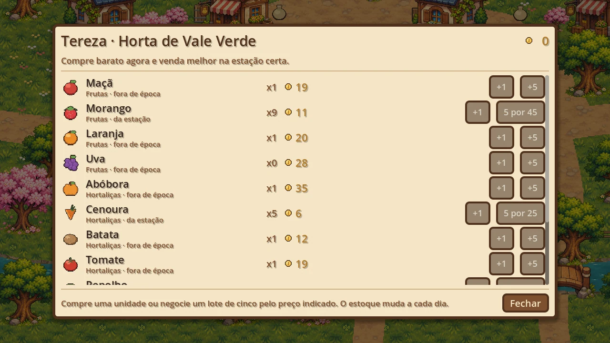

Primavera
Flores, sementes e ervas.

Com apenas 60 moedas e o diário do seu avô, comece uma nova vida em Vale Verde. Construa seu negócio, faça amizades e descubra oportunidades a cada estação.
Acompanhar desenvolvimento ↓
A proposta é acompanhar um jovem que deixa a casa dos pais para conquistar independência. Uma pequena banca de madeira e um humilde casebre serão o início da sua jornada. João, o comerciante experiente, Tereza, a agricultora, e o misterioso Forasteiro farão parte de um mundo que muda com o tempo.
Uma vila acolhedora, com câmera próxima em perspectiva 3/4, personagens expressivos, vegetação variada e iluminação suave.

Chapéu de palha, lenço vermelho, mochila e botas: a identidade do protagonista é preservada nas quatro direções. Estamos estudando proporções chibi, animações, nitidez dos sprites e integração com os cenários.
Estudo artístico do personagem, não sprite final.

Oferta, demanda, clima, qualidade e concorrência influenciam os preços. Compre, administre estoques, negocie, venda e reinvista para expandir sua banca até uma rede comercial.
Flores, sementes e ervas.
Frutas, refrescos e visitantes.
Colheitas, festival e o Forasteiro.
Lenha, mantas, chás e escassez.
Capturas reais de protótipos em diferentes etapas. A arte, a interface e as mecânicas continuam em revisão.




Sprites HD, sombras de contato, profundidade, câmera e variedade ambiental.
Economia sazonal, clientes, reputação, estoque e expansão regional.
PC em HD e Full HD como prioridade. Nintendo DSi e Wii U são objetivos futuros de portabilidade, sem versão anunciada.
Escopo inicial planejado: praça, banca, três personagens, quatro estações e cerca de 20 produtos. Sem data de lançamento anunciada.